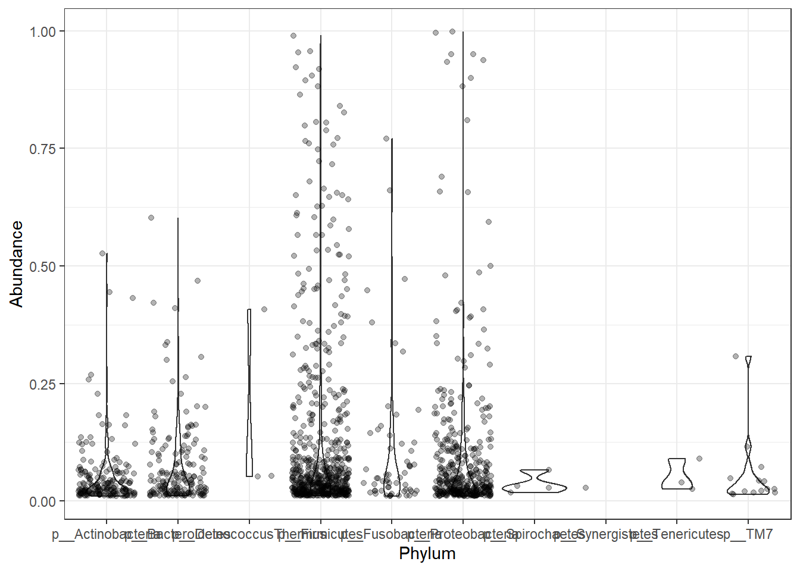

Last updated: 2021-01-14
Checks: 7 0
Knit directory: esoph-micro-cancer-workflow/
This reproducible R Markdown analysis was created with workflowr (version 1.6.2). The Checks tab describes the reproducibility checks that were applied when the results were created. The Past versions tab lists the development history.
Great! Since the R Markdown file has been committed to the Git repository, you know the exact version of the code that produced these results.
Great job! The global environment was empty. Objects defined in the global environment can affect the analysis in your R Markdown file in unknown ways. For reproduciblity it’s best to always run the code in an empty environment.
The command set.seed(20200916) was run prior to running the code in the R Markdown file. Setting a seed ensures that any results that rely on randomness, e.g. subsampling or permutations, are reproducible.
Great job! Recording the operating system, R version, and package versions is critical for reproducibility.
Nice! There were no cached chunks for this analysis, so you can be confident that you successfully produced the results during this run.
Great job! Using relative paths to the files within your workflowr project makes it easier to run your code on other machines.
Great! You are using Git for version control. Tracking code development and connecting the code version to the results is critical for reproducibility.
The results in this page were generated with repository version e6b4c7f. See the Past versions tab to see a history of the changes made to the R Markdown and HTML files.
Note that you need to be careful to ensure that all relevant files for the analysis have been committed to Git prior to generating the results (you can use wflow_publish or wflow_git_commit). workflowr only checks the R Markdown file, but you know if there are other scripts or data files that it depends on. Below is the status of the Git repository when the results were generated:
Ignored files:
Ignored: .Rhistory
Ignored: .Rproj.user/
Ignored: data/
Note that any generated files, e.g. HTML, png, CSS, etc., are not included in this status report because it is ok for generated content to have uncommitted changes.
These are the previous versions of the repository in which changes were made to the R Markdown (analysis/ids_abundance_misc.Rmd) and HTML (docs/ids_abundance_misc.html) files. If you’ve configured a remote Git repository (see ?wflow_git_remote), click on the hyperlinks in the table below to view the files as they were in that past version.
| File | Version | Author | Date | Message |
|---|---|---|---|---|
| Rmd | 9937a7e | noah-padgett | 2020-11-05 | new abundance data results |
| html | 9937a7e | noah-padgett | 2020-11-05 | new abundance data results |
| Rmd | e41080d | noah-padgett | 2020-10-22 | updated cleaning and ids data |
| html | e41080d | noah-padgett | 2020-10-22 | updated cleaning and ids data |
# Transform to relative abundance. Save as new object.
ra.dat = transform_sample_counts(phylo.data.nci.umd, function(x){x / sum(x)})
mphyseq = phyloseq::psmelt(ra.dat)
mphyseq <- subset(mphyseq, Abundance > 0.01)
A <- mphyseq %>%
filter(Genus == "g__Fusobacterium", Abundance > .01)
kable(A[, c("Sample", "Abundance")], style= "html", digits=3) %>%
kable_styling(full_width = T)| Sample | Abundance |
|---|---|
| 205.S2.Jun172016 | 0.770 |
| 71.H10.S94.Jun232016 | 0.660 |
| 74.H03.S87.Jul202017 | 0.472 |
| 73.H04.S88.Jul202017 | 0.448 |
| 16.S38.Jun172016 | 0.380 |
| 156.S42.Jun172016 | 0.336 |
| 204.S1.Jun172016 | 0.318 |
| 173.S66.Jun172016 | 0.194 |
| 135.B06.S18.Jun232016 | 0.184 |
| 97.S45.Jun172016 | 0.160 |
| 114.S41.Jun172016 | 0.144 |
| 158.D06.S42.Jun232016 | 0.140 |
| 1.S37.Jun172016 | 0.124 |
| 174.S76.Jun172016 | 0.122 |
| 27.F09.S69.Jun232016 | 0.106 |
| 55.E03.S51.Jul202017 | 0.084 |
| 175.S88.Jun172016 | 0.078 |
| 124.S93.Jun172016 | 0.076 |
| 46.C04.S28.Jul202017 | 0.074 |
| 24.S92.Jun172016 | 0.060 |
| 38.C09.S33.Jun232016 | 0.056 |
| 112.F02.S62.Jun232016 | 0.048 |
| 127.S6.Jun172016 | 0.044 |
| 186.S77.Jun172016 | 0.042 |
| 87.B01.S13.Jun232016 | 0.042 |
| 103.S58.Jun172016 | 0.038 |
| 167.E05.S53.Jun232016 | 0.038 |
| 81.A02.S2.Jun232016 | 0.030 |
| 104.S23.Jun172016 | 0.024 |
| 179.F01.S61.Jul202017 | 0.024 |
| 172.S65.Jun172016 | 0.022 |
| 199.A11.S11.Jun232016 | 0.022 |
| 128.S5.Jun172016 | 0.022 |
| 139.F07.S67.Jun232016 | 0.020 |
| 130.A02.S2.Jul202017 | 0.018 |
| 108.E06.S54.Jul202017 | 0.012 |
| 159.B10.S22.Jul202017 | 0.012 |
| 113.F01.S61.Jun232016 | 0.012 |
| 184.S61.Jun172016 | 0.010 |
p <- ggplot(mphyseq, aes(x=Phylum, y=Abundance))+
geom_violin()+
geom_jitter(alpha=0.3)
p
# Transform to relative abundance. Save as new object.
ra.dat = transform_sample_counts(phylo.data.tcga.RNAseq, function(x){x / sum(x)})
mphyseq = phyloseq::psmelt(ra.dat)
A <- mphyseq %>%
filter(Genus == "Fusobacterium", Abundance > .01)
kable(A[, c("Sample", "Abundance")], style= "html", digits=3) %>%
kable_styling(full_width = T)| Sample | Abundance |
|---|---|
| TCGA.L5.A4OT.Tumor.RNAseq.71d | 0.248 |
| TCGA.LN.A49U.Tumor.RNAseq.450 | 0.086 |
| TCGA.S8.A6BW.Tumor.RNAseq.802 | 0.069 |
| TCGA.IG.A50L.Tumor.RNAseq.93f | 0.055 |
| TCGA.L7.A56G.Tumor.RNAseq.70a | 0.045 |
# Transform to relative abundance. Save as new object.
ra.dat = transform_sample_counts(phylo.data.tcga.WGS, function(x){x / sum(x)})
mphyseq = phyloseq::psmelt(ra.dat)
A <- mphyseq %>%
filter(Genus == "Fusobacterium", Abundance > .01)
kable(A[, c("Sample", "Abundance")], style= "html", digits=3) %>%
kable_styling(full_width = T)| Sample | Abundance |
|---|---|
| TCGA.L5.A4OT.Tumor.WGS.7d4 | 0.484 |
| TCGA.LN.A49U.Tumor.WGS.c07 | 0.394 |
| TCGA.L5.A4OG.Tumor.WGS.cef | 0.385 |
| TCGA.IG.A50L.Tumor.WGS.3e7 | 0.243 |
| TCGA.LN.A49V.Tumor.WGS.331 | 0.158 |
| TCGA.L7.A56G.Tumor.WGS.8e8 | 0.094 |
| TCGA.L5.A4OG.Normal.WGS.963 | 0.048 |
| TCGA.IG.A3I8.Tumor.WGS.d45 | 0.045 |
| TCGA.IG.A5S3.Tumor.WGS.736 | 0.041 |
| TCGA.L5.A4OI.Tumor.WGS.61f | 0.036 |
| TCGA.LN.A5U5.Tumor.WGS.d38 | 0.031 |
| TCGA.L5.A891.Tumor.WGS.6a8 | 0.025 |
| TCGA.L5.A4OM.Normal.WGS.6cb | 0.018 |
| TCGA.IG.A5B8.Tumor.WGS.948 | 0.013 |
| TCGA.LN.A4MR.Tumor.WGS.6c3 | 0.012 |
| TCGA.IG.A3I8.Normal.WGS.a07 | 0.011 |
Table with sample IDs with highest abundance of the following:
# Transform to relative abundance. Save as new object.
ra.dat = transform_sample_counts(phylo.data.nci.umd, function(x){x / sum(x)})
mphyseq = phyloseq::psmelt(ra.dat)
A <- mphyseq %>%
filter(OTU == "Fusobacterium_nucleatum", Abundance > 0.001)
kable(A[, c("Sample", "Abundance")], style= "html", digits=3) %>%
kable_styling(full_width = T)| Sample | Abundance |
|---|---|
| 205.S2.Jun172016 | 0.770 |
| 71.H10.S94.Jun232016 | 0.660 |
| 74.H03.S87.Jul202017 | 0.472 |
| 73.H04.S88.Jul202017 | 0.448 |
| 16.S38.Jun172016 | 0.380 |
| 156.S42.Jun172016 | 0.336 |
| 204.S1.Jun172016 | 0.318 |
| 173.S66.Jun172016 | 0.194 |
| 135.B06.S18.Jun232016 | 0.184 |
| 97.S45.Jun172016 | 0.160 |
| 114.S41.Jun172016 | 0.144 |
| 158.D06.S42.Jun232016 | 0.140 |
| 1.S37.Jun172016 | 0.124 |
| 174.S76.Jun172016 | 0.122 |
| 27.F09.S69.Jun232016 | 0.106 |
| 55.E03.S51.Jul202017 | 0.084 |
| 175.S88.Jun172016 | 0.078 |
| 124.S93.Jun172016 | 0.076 |
| 46.C04.S28.Jul202017 | 0.074 |
| 24.S92.Jun172016 | 0.060 |
| 38.C09.S33.Jun232016 | 0.056 |
| 112.F02.S62.Jun232016 | 0.048 |
| 127.S6.Jun172016 | 0.044 |
| 186.S77.Jun172016 | 0.042 |
| 87.B01.S13.Jun232016 | 0.042 |
| 103.S58.Jun172016 | 0.038 |
| 167.E05.S53.Jun232016 | 0.038 |
| 81.A02.S2.Jun232016 | 0.030 |
| 104.S23.Jun172016 | 0.024 |
| 179.F01.S61.Jul202017 | 0.024 |
| 172.S65.Jun172016 | 0.022 |
| 199.A11.S11.Jun232016 | 0.022 |
| 128.S5.Jun172016 | 0.022 |
| 139.F07.S67.Jun232016 | 0.020 |
| 130.A02.S2.Jul202017 | 0.018 |
| 108.E06.S54.Jul202017 | 0.012 |
| 159.B10.S22.Jul202017 | 0.012 |
| 113.F01.S61.Jun232016 | 0.012 |
| 184.S61.Jun172016 | 0.010 |
| 23.S75.Jun172016 | 0.010 |
| 233.G07.S79.Jun232016 | 0.010 |
| 31.C08.S32.Jun232016 | 0.010 |
| 234.C07.S31.Jul202017 | 0.008 |
| 42.A04.S4.Jul202017 | 0.008 |
| 36.F04.S64.Jul202017 | 0.008 |
| 86.B02.S14.Jun232016 | 0.008 |
| 154.C02.S26.Jul202017 | 0.008 |
| 191.G02.S74.Jul202017 | 0.008 |
| 25.C03.S27.Jul202017 | 0.008 |
| 131.S62.Jun172016 | 0.007 |
| 150.C06.S30.Jun232016 | 0.006 |
| 168.S59.Jun172016 | 0.006 |
| 96.S46.Jun172016 | 0.006 |
| 58.S67.Jun172016 | 0.004 |
| 77.S10.Jun172016 | 0.004 |
| 2.S16.Jun172016 | 0.004 |
| 157.D05.S41.Jun232016 | 0.004 |
| 19.S25.Jun172016 | 0.004 |
| 208.D03.S39.Jun232016 | 0.002 |
| 162.G04.S76.Jun232016 | 0.002 |
| 5.S4.Jun172016 | 0.002 |
| 109.S70.Jun172016 | 0.002 |
| 102.S57.Jun172016 | 0.002 |
| 227.S74.Jun172016 | 0.002 |
| 146.S29.Jun172016 | 0.002 |
| 80.A01.S1.Jun232016 | 0.002 |
| 188.G06.S78.Jun232016 | 0.002 |
| 140.B02.S14.Jul202017 | 0.002 |
| 67.D10.S46.Jul202017 | 0.002 |
| 59.S72.Jun172016 | 0.002 |
| 155.C09.S33.Jul202017 | 0.002 |
| 166.E06.S54.Jun232016 | 0.002 |
| 22.C07.S31.Jun232016 | 0.002 |
| 62.G10.S82.Jun232016 | 0.002 |
NOT UNIQUELY FOUND
Only found as: Streptococcus_dentisani:Streptococcus_infantis:Streptococcus_mitis:Streptococcus_oligofermentans:Streptococcus_oralis:Streptococcus_pneumoniae:Streptococcus_pseudopneumoniae:Streptococcus_sanguinis
A <- mphyseq %>%
filter(OTU %like% "Streptococcus_sanguinis", Abundance > 0.001)
kable(A[, c("OTU","Sample", "Abundance")], style= "html", digits=3) %>%
kable_styling(full_width = T)| OTU | Sample | Abundance |
|---|---|---|
| Streptococcus_dentisani:Streptococcus_infantis:Streptococcus_mitis:Streptococcus_oligofermentans:Streptococcus_oralis:Streptococcus_pneumoniae:Streptococcus_pseudopneumoniae:Streptococcus_sanguinis | 102.S57.Jun172016 | 0.990 |
| Streptococcus_dentisani:Streptococcus_infantis:Streptococcus_mitis:Streptococcus_oligofermentans:Streptococcus_oralis:Streptococcus_pneumoniae:Streptococcus_pseudopneumoniae:Streptococcus_sanguinis | 53.E09.S57.Jun232016 | 0.894 |
| Streptococcus_dentisani:Streptococcus_infantis:Streptococcus_mitis:Streptococcus_oligofermentans:Streptococcus_oralis:Streptococcus_pneumoniae:Streptococcus_pseudopneumoniae:Streptococcus_sanguinis | 239.D09.S45.Jun232016 | 0.882 |
| Streptococcus_dentisani:Streptococcus_infantis:Streptococcus_mitis:Streptococcus_oligofermentans:Streptococcus_oralis:Streptococcus_pneumoniae:Streptococcus_pseudopneumoniae:Streptococcus_sanguinis | 108.E06.S54.Jul202017 | 0.864 |
| Streptococcus_dentisani:Streptococcus_infantis:Streptococcus_mitis:Streptococcus_oligofermentans:Streptococcus_oralis:Streptococcus_pneumoniae:Streptococcus_pseudopneumoniae:Streptococcus_sanguinis | 185.G08.S80.Jun232016 | 0.840 |
| Streptococcus_dentisani:Streptococcus_infantis:Streptococcus_mitis:Streptococcus_oligofermentans:Streptococcus_oralis:Streptococcus_pneumoniae:Streptococcus_pseudopneumoniae:Streptococcus_sanguinis | 165.S54.Jun172016 | 0.826 |
| Streptococcus_dentisani:Streptococcus_infantis:Streptococcus_mitis:Streptococcus_oligofermentans:Streptococcus_oralis:Streptococcus_pneumoniae:Streptococcus_pseudopneumoniae:Streptococcus_sanguinis | 57.S68.Jun172016 | 0.806 |
| Streptococcus_dentisani:Streptococcus_infantis:Streptococcus_mitis:Streptococcus_oligofermentans:Streptococcus_oralis:Streptococcus_pneumoniae:Streptococcus_pseudopneumoniae:Streptococcus_sanguinis | 29.S31.Jun172016 | 0.805 |
| Streptococcus_dentisani:Streptococcus_infantis:Streptococcus_mitis:Streptococcus_oligofermentans:Streptococcus_oralis:Streptococcus_pneumoniae:Streptococcus_pseudopneumoniae:Streptococcus_sanguinis | 37.S32.Jun172016 | 0.798 |
| Streptococcus_dentisani:Streptococcus_infantis:Streptococcus_mitis:Streptococcus_oligofermentans:Streptococcus_oralis:Streptococcus_pneumoniae:Streptococcus_pseudopneumoniae:Streptococcus_sanguinis | 199.A11.S11.Jun232016 | 0.788 |
| Streptococcus_dentisani:Streptococcus_infantis:Streptococcus_mitis:Streptococcus_oligofermentans:Streptococcus_oralis:Streptococcus_pneumoniae:Streptococcus_pseudopneumoniae:Streptococcus_sanguinis | 150.C06.S30.Jun232016 | 0.766 |
| Streptococcus_dentisani:Streptococcus_infantis:Streptococcus_mitis:Streptococcus_oligofermentans:Streptococcus_oralis:Streptococcus_pneumoniae:Streptococcus_pseudopneumoniae:Streptococcus_sanguinis | 137.F09.S69.Jul202017 | 0.758 |
| Streptococcus_dentisani:Streptococcus_infantis:Streptococcus_mitis:Streptococcus_oligofermentans:Streptococcus_oralis:Streptococcus_pneumoniae:Streptococcus_pseudopneumoniae:Streptococcus_sanguinis | 159.B10.S22.Jul202017 | 0.748 |
| Streptococcus_dentisani:Streptococcus_infantis:Streptococcus_mitis:Streptococcus_oligofermentans:Streptococcus_oralis:Streptococcus_pneumoniae:Streptococcus_pseudopneumoniae:Streptococcus_sanguinis | 83.A06.S6.Jul202017 | 0.722 |
| Streptococcus_dentisani:Streptococcus_infantis:Streptococcus_mitis:Streptococcus_oligofermentans:Streptococcus_oralis:Streptococcus_pneumoniae:Streptococcus_pseudopneumoniae:Streptococcus_sanguinis | 18.S35.Jun172016 | 0.716 |
| Streptococcus_dentisani:Streptococcus_infantis:Streptococcus_mitis:Streptococcus_oligofermentans:Streptococcus_oralis:Streptococcus_pneumoniae:Streptococcus_pseudopneumoniae:Streptococcus_sanguinis | 103.S58.Jun172016 | 0.680 |
| Streptococcus_dentisani:Streptococcus_infantis:Streptococcus_mitis:Streptococcus_oligofermentans:Streptococcus_oralis:Streptococcus_pneumoniae:Streptococcus_pseudopneumoniae:Streptococcus_sanguinis | 52.E10.S58.Jun232016 | 0.665 |
| Streptococcus_dentisani:Streptococcus_infantis:Streptococcus_mitis:Streptococcus_oligofermentans:Streptococcus_oralis:Streptococcus_pneumoniae:Streptococcus_pseudopneumoniae:Streptococcus_sanguinis | 196.D08.S44.Jun232016 | 0.650 |
| Streptococcus_dentisani:Streptococcus_infantis:Streptococcus_mitis:Streptococcus_oligofermentans:Streptococcus_oralis:Streptococcus_pneumoniae:Streptococcus_pseudopneumoniae:Streptococcus_sanguinis | 145.D09.S45.Jul202017 | 0.650 |
| Streptococcus_dentisani:Streptococcus_infantis:Streptococcus_mitis:Streptococcus_oligofermentans:Streptococcus_oralis:Streptococcus_pneumoniae:Streptococcus_pseudopneumoniae:Streptococcus_sanguinis | 95.C06.S30.Jul202017 | 0.646 |
| Streptococcus_dentisani:Streptococcus_infantis:Streptococcus_mitis:Streptococcus_oligofermentans:Streptococcus_oralis:Streptococcus_pneumoniae:Streptococcus_pseudopneumoniae:Streptococcus_sanguinis | 84.S22.Jun172016 | 0.642 |
| Streptococcus_dentisani:Streptococcus_infantis:Streptococcus_mitis:Streptococcus_oligofermentans:Streptococcus_oralis:Streptococcus_pneumoniae:Streptococcus_pseudopneumoniae:Streptococcus_sanguinis | 176.H07.S91.Jul202017 | 0.626 |
| Streptococcus_dentisani:Streptococcus_infantis:Streptococcus_mitis:Streptococcus_oligofermentans:Streptococcus_oralis:Streptococcus_pneumoniae:Streptococcus_pseudopneumoniae:Streptococcus_sanguinis | 229.S79.Jun172016 | 0.612 |
| Streptococcus_dentisani:Streptococcus_infantis:Streptococcus_mitis:Streptococcus_oligofermentans:Streptococcus_oralis:Streptococcus_pneumoniae:Streptococcus_pseudopneumoniae:Streptococcus_sanguinis | 194.H05.S89.Jun232016 | 0.608 |
| Streptococcus_dentisani:Streptococcus_infantis:Streptococcus_mitis:Streptococcus_oligofermentans:Streptococcus_oralis:Streptococcus_pneumoniae:Streptococcus_pseudopneumoniae:Streptococcus_sanguinis | 26.H04.S88.Jun232016 | 0.604 |
| Streptococcus_dentisani:Streptococcus_infantis:Streptococcus_mitis:Streptococcus_oligofermentans:Streptococcus_oralis:Streptococcus_pneumoniae:Streptococcus_pseudopneumoniae:Streptococcus_sanguinis | 125.H06.S90.Jul202017 | 0.586 |
| Streptococcus_dentisani:Streptococcus_infantis:Streptococcus_mitis:Streptococcus_oligofermentans:Streptococcus_oralis:Streptococcus_pneumoniae:Streptococcus_pseudopneumoniae:Streptococcus_sanguinis | 206.S51.Jun172016 | 0.578 |
| Streptococcus_dentisani:Streptococcus_infantis:Streptococcus_mitis:Streptococcus_oligofermentans:Streptococcus_oralis:Streptococcus_pneumoniae:Streptococcus_pseudopneumoniae:Streptococcus_sanguinis | 200.S96.Jun172016 | 0.566 |
| Streptococcus_dentisani:Streptococcus_infantis:Streptococcus_mitis:Streptococcus_oligofermentans:Streptococcus_oralis:Streptococcus_pneumoniae:Streptococcus_pseudopneumoniae:Streptococcus_sanguinis | 201.H02.S86.Jun242016 | 0.566 |
| Streptococcus_dentisani:Streptococcus_infantis:Streptococcus_mitis:Streptococcus_oligofermentans:Streptococcus_oralis:Streptococcus_pneumoniae:Streptococcus_pseudopneumoniae:Streptococcus_sanguinis | 139.F07.S67.Jun232016 | 0.544 |
| Streptococcus_dentisani:Streptococcus_infantis:Streptococcus_mitis:Streptococcus_oligofermentans:Streptococcus_oralis:Streptococcus_pneumoniae:Streptococcus_pseudopneumoniae:Streptococcus_sanguinis | 168.S59.Jun172016 | 0.534 |
| Streptococcus_dentisani:Streptococcus_infantis:Streptococcus_mitis:Streptococcus_oligofermentans:Streptococcus_oralis:Streptococcus_pneumoniae:Streptococcus_pseudopneumoniae:Streptococcus_sanguinis | 60.C10.S34.Jul202017 | 0.533 |
| Streptococcus_dentisani:Streptococcus_infantis:Streptococcus_mitis:Streptococcus_oligofermentans:Streptococcus_oralis:Streptococcus_pneumoniae:Streptococcus_pseudopneumoniae:Streptococcus_sanguinis | 211.A07.S7.Jun232016 | 0.524 |
| Streptococcus_dentisani:Streptococcus_infantis:Streptococcus_mitis:Streptococcus_oligofermentans:Streptococcus_oralis:Streptococcus_pneumoniae:Streptococcus_pseudopneumoniae:Streptococcus_sanguinis | 66.G04.S76.Jul202017 | 0.524 |
| Streptococcus_dentisani:Streptococcus_infantis:Streptococcus_mitis:Streptococcus_oligofermentans:Streptococcus_oralis:Streptococcus_pneumoniae:Streptococcus_pseudopneumoniae:Streptococcus_sanguinis | 128.S5.Jun172016 | 0.522 |
| Streptococcus_dentisani:Streptococcus_infantis:Streptococcus_mitis:Streptococcus_oligofermentans:Streptococcus_oralis:Streptococcus_pneumoniae:Streptococcus_pseudopneumoniae:Streptococcus_sanguinis | 149.C05.S29.Jun232016 | 0.520 |
| Streptococcus_dentisani:Streptococcus_infantis:Streptococcus_mitis:Streptococcus_oligofermentans:Streptococcus_oralis:Streptococcus_pneumoniae:Streptococcus_pseudopneumoniae:Streptococcus_sanguinis | 11.B08.S20.Jun232016 | 0.494 |
| Streptococcus_dentisani:Streptococcus_infantis:Streptococcus_mitis:Streptococcus_oligofermentans:Streptococcus_oralis:Streptococcus_pneumoniae:Streptococcus_pseudopneumoniae:Streptococcus_sanguinis | 154.C02.S26.Jul202017 | 0.482 |
| Streptococcus_dentisani:Streptococcus_infantis:Streptococcus_mitis:Streptococcus_oligofermentans:Streptococcus_oralis:Streptococcus_pneumoniae:Streptococcus_pseudopneumoniae:Streptococcus_sanguinis | 106.E02.S50.Jun232016 | 0.470 |
| Streptococcus_dentisani:Streptococcus_infantis:Streptococcus_mitis:Streptococcus_oligofermentans:Streptococcus_oralis:Streptococcus_pneumoniae:Streptococcus_pseudopneumoniae:Streptococcus_sanguinis | 81.A02.S2.Jun232016 | 0.462 |
| Streptococcus_dentisani:Streptococcus_infantis:Streptococcus_mitis:Streptococcus_oligofermentans:Streptococcus_oralis:Streptococcus_pneumoniae:Streptococcus_pseudopneumoniae:Streptococcus_sanguinis | 146.S29.Jun172016 | 0.452 |
| Streptococcus_dentisani:Streptococcus_infantis:Streptococcus_mitis:Streptococcus_oligofermentans:Streptococcus_oralis:Streptococcus_pneumoniae:Streptococcus_pseudopneumoniae:Streptococcus_sanguinis | 155.C09.S33.Jul202017 | 0.452 |
| Streptococcus_dentisani:Streptococcus_infantis:Streptococcus_mitis:Streptococcus_oligofermentans:Streptococcus_oralis:Streptococcus_pneumoniae:Streptococcus_pseudopneumoniae:Streptococcus_sanguinis | 50.S56.Jun172016 | 0.450 |
| Streptococcus_dentisani:Streptococcus_infantis:Streptococcus_mitis:Streptococcus_oligofermentans:Streptococcus_oralis:Streptococcus_pneumoniae:Streptococcus_pseudopneumoniae:Streptococcus_sanguinis | 59.S72.Jun172016 | 0.450 |
| Streptococcus_dentisani:Streptococcus_infantis:Streptococcus_mitis:Streptococcus_oligofermentans:Streptococcus_oralis:Streptococcus_pneumoniae:Streptococcus_pseudopneumoniae:Streptococcus_sanguinis | 202.D07.S43.Jul202017 | 0.446 |
| Streptococcus_dentisani:Streptococcus_infantis:Streptococcus_mitis:Streptococcus_oligofermentans:Streptococcus_oralis:Streptococcus_pneumoniae:Streptococcus_pseudopneumoniae:Streptococcus_sanguinis | 112.F02.S62.Jun232016 | 0.438 |
| Streptococcus_dentisani:Streptococcus_infantis:Streptococcus_mitis:Streptococcus_oligofermentans:Streptococcus_oralis:Streptococcus_pneumoniae:Streptococcus_pseudopneumoniae:Streptococcus_sanguinis | 5.S4.Jun172016 | 0.436 |
| Streptococcus_dentisani:Streptococcus_infantis:Streptococcus_mitis:Streptococcus_oligofermentans:Streptococcus_oralis:Streptococcus_pneumoniae:Streptococcus_pseudopneumoniae:Streptococcus_sanguinis | 191.G02.S74.Jul202017 | 0.416 |
| Streptococcus_dentisani:Streptococcus_infantis:Streptococcus_mitis:Streptococcus_oligofermentans:Streptococcus_oralis:Streptococcus_pneumoniae:Streptococcus_pseudopneumoniae:Streptococcus_sanguinis | 113.F01.S61.Jun232016 | 0.414 |
| Streptococcus_dentisani:Streptococcus_infantis:Streptococcus_mitis:Streptococcus_oligofermentans:Streptococcus_oralis:Streptococcus_pneumoniae:Streptococcus_pseudopneumoniae:Streptococcus_sanguinis | 142.E08.S56.Jul202017 | 0.398 |
| Streptococcus_dentisani:Streptococcus_infantis:Streptococcus_mitis:Streptococcus_oligofermentans:Streptococcus_oralis:Streptococcus_pneumoniae:Streptococcus_pseudopneumoniae:Streptococcus_sanguinis | 22.C07.S31.Jun232016 | 0.394 |
| Streptococcus_dentisani:Streptococcus_infantis:Streptococcus_mitis:Streptococcus_oligofermentans:Streptococcus_oralis:Streptococcus_pneumoniae:Streptococcus_pseudopneumoniae:Streptococcus_sanguinis | 24.S92.Jun172016 | 0.392 |
| Streptococcus_dentisani:Streptococcus_infantis:Streptococcus_mitis:Streptococcus_oligofermentans:Streptococcus_oralis:Streptococcus_pneumoniae:Streptococcus_pseudopneumoniae:Streptococcus_sanguinis | 31.C08.S32.Jun232016 | 0.382 |
| Streptococcus_dentisani:Streptococcus_infantis:Streptococcus_mitis:Streptococcus_oligofermentans:Streptococcus_oralis:Streptococcus_pneumoniae:Streptococcus_pseudopneumoniae:Streptococcus_sanguinis | 48.S43.Jun172016 | 0.380 |
| Streptococcus_dentisani:Streptococcus_infantis:Streptococcus_mitis:Streptococcus_oligofermentans:Streptococcus_oralis:Streptococcus_pneumoniae:Streptococcus_pseudopneumoniae:Streptococcus_sanguinis | 46.C04.S28.Jul202017 | 0.378 |
| Streptococcus_dentisani:Streptococcus_infantis:Streptococcus_mitis:Streptococcus_oligofermentans:Streptococcus_oralis:Streptococcus_pneumoniae:Streptococcus_pseudopneumoniae:Streptococcus_sanguinis | 130.A02.S2.Jul202017 | 0.362 |
| Streptococcus_dentisani:Streptococcus_infantis:Streptococcus_mitis:Streptococcus_oligofermentans:Streptococcus_oralis:Streptococcus_pneumoniae:Streptococcus_pseudopneumoniae:Streptococcus_sanguinis | 129.A01.S1.Jul202017 | 0.360 |
| Streptococcus_dentisani:Streptococcus_infantis:Streptococcus_mitis:Streptococcus_oligofermentans:Streptococcus_oralis:Streptococcus_pneumoniae:Streptococcus_pseudopneumoniae:Streptococcus_sanguinis | 167.E05.S53.Jun232016 | 0.350 |
| Streptococcus_dentisani:Streptococcus_infantis:Streptococcus_mitis:Streptococcus_oligofermentans:Streptococcus_oralis:Streptococcus_pneumoniae:Streptococcus_pseudopneumoniae:Streptococcus_sanguinis | 110.S69.Jun172016 | 0.335 |
| Streptococcus_dentisani:Streptococcus_infantis:Streptococcus_mitis:Streptococcus_oligofermentans:Streptococcus_oralis:Streptococcus_pneumoniae:Streptococcus_pseudopneumoniae:Streptococcus_sanguinis | 190.G01.S73.Jul202017 | 0.334 |
| Streptococcus_dentisani:Streptococcus_infantis:Streptococcus_mitis:Streptococcus_oligofermentans:Streptococcus_oralis:Streptococcus_pneumoniae:Streptococcus_pseudopneumoniae:Streptococcus_sanguinis | 80.A01.S1.Jun232016 | 0.332 |
| Streptococcus_dentisani:Streptococcus_infantis:Streptococcus_mitis:Streptococcus_oligofermentans:Streptococcus_oralis:Streptococcus_pneumoniae:Streptococcus_pseudopneumoniae:Streptococcus_sanguinis | 82.A05.S5.Jul202017 | 0.326 |
| Streptococcus_dentisani:Streptococcus_infantis:Streptococcus_mitis:Streptococcus_oligofermentans:Streptococcus_oralis:Streptococcus_pneumoniae:Streptococcus_pseudopneumoniae:Streptococcus_sanguinis | 233.G07.S79.Jun232016 | 0.326 |
| Streptococcus_dentisani:Streptococcus_infantis:Streptococcus_mitis:Streptococcus_oligofermentans:Streptococcus_oralis:Streptococcus_pneumoniae:Streptococcus_pseudopneumoniae:Streptococcus_sanguinis | 121.G05.S77.Jul202017 | 0.324 |
| Streptococcus_dentisani:Streptococcus_infantis:Streptococcus_mitis:Streptococcus_oligofermentans:Streptococcus_oralis:Streptococcus_pneumoniae:Streptococcus_pseudopneumoniae:Streptococcus_sanguinis | 152.H07.S91.Jun232016 | 0.320 |
| Streptococcus_dentisani:Streptococcus_infantis:Streptococcus_mitis:Streptococcus_oligofermentans:Streptococcus_oralis:Streptococcus_pneumoniae:Streptococcus_pseudopneumoniae:Streptococcus_sanguinis | 38.C09.S33.Jun232016 | 0.316 |
| Streptococcus_dentisani:Streptococcus_infantis:Streptococcus_mitis:Streptococcus_oligofermentans:Streptococcus_oralis:Streptococcus_pneumoniae:Streptococcus_pseudopneumoniae:Streptococcus_sanguinis | 23.S75.Jun172016 | 0.312 |
| Streptococcus_dentisani:Streptococcus_infantis:Streptococcus_mitis:Streptococcus_oligofermentans:Streptococcus_oralis:Streptococcus_pneumoniae:Streptococcus_pseudopneumoniae:Streptococcus_sanguinis | 77.S10.Jun172016 | 0.288 |
| Streptococcus_dentisani:Streptococcus_infantis:Streptococcus_mitis:Streptococcus_oligofermentans:Streptococcus_oralis:Streptococcus_pneumoniae:Streptococcus_pseudopneumoniae:Streptococcus_sanguinis | 62.G10.S82.Jun232016 | 0.288 |
| Streptococcus_dentisani:Streptococcus_infantis:Streptococcus_mitis:Streptococcus_oligofermentans:Streptococcus_oralis:Streptococcus_pneumoniae:Streptococcus_pseudopneumoniae:Streptococcus_sanguinis | 104.S23.Jun172016 | 0.282 |
| Streptococcus_dentisani:Streptococcus_infantis:Streptococcus_mitis:Streptococcus_oligofermentans:Streptococcus_oralis:Streptococcus_pneumoniae:Streptococcus_pseudopneumoniae:Streptococcus_sanguinis | 90.S33.Jun172016 | 0.276 |
| Streptococcus_dentisani:Streptococcus_infantis:Streptococcus_mitis:Streptococcus_oligofermentans:Streptococcus_oralis:Streptococcus_pneumoniae:Streptococcus_pseudopneumoniae:Streptococcus_sanguinis | 173.S66.Jun172016 | 0.238 |
| Streptococcus_dentisani:Streptococcus_infantis:Streptococcus_mitis:Streptococcus_oligofermentans:Streptococcus_oralis:Streptococcus_pneumoniae:Streptococcus_pseudopneumoniae:Streptococcus_sanguinis | 195.H06.S90.Jun232016 | 0.236 |
| Streptococcus_dentisani:Streptococcus_infantis:Streptococcus_mitis:Streptococcus_oligofermentans:Streptococcus_oralis:Streptococcus_pneumoniae:Streptococcus_pseudopneumoniae:Streptococcus_sanguinis | 67.D10.S46.Jul202017 | 0.232 |
| Streptococcus_dentisani:Streptococcus_infantis:Streptococcus_mitis:Streptococcus_oligofermentans:Streptococcus_oralis:Streptococcus_pneumoniae:Streptococcus_pseudopneumoniae:Streptococcus_sanguinis | 7.A08.S8.Jul202017 | 0.231 |
| Streptococcus_dentisani:Streptococcus_infantis:Streptococcus_mitis:Streptococcus_oligofermentans:Streptococcus_oralis:Streptococcus_pneumoniae:Streptococcus_pseudopneumoniae:Streptococcus_sanguinis | 175.S88.Jun172016 | 0.228 |
| Streptococcus_dentisani:Streptococcus_infantis:Streptococcus_mitis:Streptococcus_oligofermentans:Streptococcus_oralis:Streptococcus_pneumoniae:Streptococcus_pseudopneumoniae:Streptococcus_sanguinis | 58.S67.Jun172016 | 0.226 |
| Streptococcus_dentisani:Streptococcus_infantis:Streptococcus_mitis:Streptococcus_oligofermentans:Streptococcus_oralis:Streptococcus_pneumoniae:Streptococcus_pseudopneumoniae:Streptococcus_sanguinis | 179.F01.S61.Jul202017 | 0.224 |
| Streptococcus_dentisani:Streptococcus_infantis:Streptococcus_mitis:Streptococcus_oligofermentans:Streptococcus_oralis:Streptococcus_pneumoniae:Streptococcus_pseudopneumoniae:Streptococcus_sanguinis | 97.S45.Jun172016 | 0.220 |
| Streptococcus_dentisani:Streptococcus_infantis:Streptococcus_mitis:Streptococcus_oligofermentans:Streptococcus_oralis:Streptococcus_pneumoniae:Streptococcus_pseudopneumoniae:Streptococcus_sanguinis | 174.S76.Jun172016 | 0.212 |
| Streptococcus_dentisani:Streptococcus_infantis:Streptococcus_mitis:Streptococcus_oligofermentans:Streptococcus_oralis:Streptococcus_pneumoniae:Streptococcus_pseudopneumoniae:Streptococcus_sanguinis | 17.S14.Jun172016 | 0.206 |
| Streptococcus_dentisani:Streptococcus_infantis:Streptococcus_mitis:Streptococcus_oligofermentans:Streptococcus_oralis:Streptococcus_pneumoniae:Streptococcus_pseudopneumoniae:Streptococcus_sanguinis | 135.B06.S18.Jun232016 | 0.200 |
| Streptococcus_dentisani:Streptococcus_infantis:Streptococcus_mitis:Streptococcus_oligofermentans:Streptococcus_oralis:Streptococcus_pneumoniae:Streptococcus_pseudopneumoniae:Streptococcus_sanguinis | 186.S77.Jun172016 | 0.198 |
| Streptococcus_dentisani:Streptococcus_infantis:Streptococcus_mitis:Streptococcus_oligofermentans:Streptococcus_oralis:Streptococcus_pneumoniae:Streptococcus_pseudopneumoniae:Streptococcus_sanguinis | 87.B01.S13.Jun232016 | 0.192 |
| Streptococcus_dentisani:Streptococcus_infantis:Streptococcus_mitis:Streptococcus_oligofermentans:Streptococcus_oralis:Streptococcus_pneumoniae:Streptococcus_pseudopneumoniae:Streptococcus_sanguinis | 234.C07.S31.Jul202017 | 0.180 |
| Streptococcus_dentisani:Streptococcus_infantis:Streptococcus_mitis:Streptococcus_oligofermentans:Streptococcus_oralis:Streptococcus_pneumoniae:Streptococcus_pseudopneumoniae:Streptococcus_sanguinis | 28.S87.Jun172016 | 0.172 |
| Streptococcus_dentisani:Streptococcus_infantis:Streptococcus_mitis:Streptococcus_oligofermentans:Streptococcus_oralis:Streptococcus_pneumoniae:Streptococcus_pseudopneumoniae:Streptococcus_sanguinis | 134.F11.S71.Jun172016 | 0.170 |
| Streptococcus_dentisani:Streptococcus_infantis:Streptococcus_mitis:Streptococcus_oligofermentans:Streptococcus_oralis:Streptococcus_pneumoniae:Streptococcus_pseudopneumoniae:Streptococcus_sanguinis | 55.E03.S51.Jul202017 | 0.164 |
| Streptococcus_dentisani:Streptococcus_infantis:Streptococcus_mitis:Streptococcus_oligofermentans:Streptococcus_oralis:Streptococcus_pneumoniae:Streptococcus_pseudopneumoniae:Streptococcus_sanguinis | 74.H03.S87.Jul202017 | 0.160 |
| Streptococcus_dentisani:Streptococcus_infantis:Streptococcus_mitis:Streptococcus_oligofermentans:Streptococcus_oralis:Streptococcus_pneumoniae:Streptococcus_pseudopneumoniae:Streptococcus_sanguinis | 172.S65.Jun172016 | 0.154 |
| Streptococcus_dentisani:Streptococcus_infantis:Streptococcus_mitis:Streptococcus_oligofermentans:Streptococcus_oralis:Streptococcus_pneumoniae:Streptococcus_pseudopneumoniae:Streptococcus_sanguinis | 208.D03.S39.Jun232016 | 0.146 |
| Streptococcus_dentisani:Streptococcus_infantis:Streptococcus_mitis:Streptococcus_oligofermentans:Streptococcus_oralis:Streptococcus_pneumoniae:Streptococcus_pseudopneumoniae:Streptococcus_sanguinis | 73.H04.S88.Jul202017 | 0.144 |
| Streptococcus_dentisani:Streptococcus_infantis:Streptococcus_mitis:Streptococcus_oligofermentans:Streptococcus_oralis:Streptococcus_pneumoniae:Streptococcus_pseudopneumoniae:Streptococcus_sanguinis | 124.S93.Jun172016 | 0.138 |
| Streptococcus_dentisani:Streptococcus_infantis:Streptococcus_mitis:Streptococcus_oligofermentans:Streptococcus_oralis:Streptococcus_pneumoniae:Streptococcus_pseudopneumoniae:Streptococcus_sanguinis | 2.S16.Jun172016 | 0.132 |
| Streptococcus_dentisani:Streptococcus_infantis:Streptococcus_mitis:Streptococcus_oligofermentans:Streptococcus_oralis:Streptococcus_pneumoniae:Streptococcus_pseudopneumoniae:Streptococcus_sanguinis | 88.B05.S17.Jul202017 | 0.124 |
| Streptococcus_dentisani:Streptococcus_infantis:Streptococcus_mitis:Streptococcus_oligofermentans:Streptococcus_oralis:Streptococcus_pneumoniae:Streptococcus_pseudopneumoniae:Streptococcus_sanguinis | 54.G11.S83.Jul202017 | 0.124 |
| Streptococcus_dentisani:Streptococcus_infantis:Streptococcus_mitis:Streptococcus_oligofermentans:Streptococcus_oralis:Streptococcus_pneumoniae:Streptococcus_pseudopneumoniae:Streptococcus_sanguinis | 19.S25.Jun172016 | 0.116 |
| Streptococcus_dentisani:Streptococcus_infantis:Streptococcus_mitis:Streptococcus_oligofermentans:Streptococcus_oralis:Streptococcus_pneumoniae:Streptococcus_pseudopneumoniae:Streptococcus_sanguinis | 86.B02.S14.Jun232016 | 0.108 |
| Streptococcus_dentisani:Streptococcus_infantis:Streptococcus_mitis:Streptococcus_oligofermentans:Streptococcus_oralis:Streptococcus_pneumoniae:Streptococcus_pseudopneumoniae:Streptococcus_sanguinis | 79.S3.Jun172016 | 0.092 |
| Streptococcus_dentisani:Streptococcus_infantis:Streptococcus_mitis:Streptococcus_oligofermentans:Streptococcus_oralis:Streptococcus_pneumoniae:Streptococcus_pseudopneumoniae:Streptococcus_sanguinis | 42.A04.S4.Jul202017 | 0.090 |
| Streptococcus_dentisani:Streptococcus_infantis:Streptococcus_mitis:Streptococcus_oligofermentans:Streptococcus_oralis:Streptococcus_pneumoniae:Streptococcus_pseudopneumoniae:Streptococcus_sanguinis | 178.F02.S62.Jul202017 | 0.088 |
| Streptococcus_dentisani:Streptococcus_infantis:Streptococcus_mitis:Streptococcus_oligofermentans:Streptococcus_oralis:Streptococcus_pneumoniae:Streptococcus_pseudopneumoniae:Streptococcus_sanguinis | 89.B06.S18.Jul202017 | 0.088 |
| Streptococcus_dentisani:Streptococcus_infantis:Streptococcus_mitis:Streptococcus_oligofermentans:Streptococcus_oralis:Streptococcus_pneumoniae:Streptococcus_pseudopneumoniae:Streptococcus_sanguinis | 118.S82.Jun172016 | 0.086 |
| Streptococcus_dentisani:Streptococcus_infantis:Streptococcus_mitis:Streptococcus_oligofermentans:Streptococcus_oralis:Streptococcus_pneumoniae:Streptococcus_pseudopneumoniae:Streptococcus_sanguinis | 162.G04.S76.Jun232016 | 0.085 |
| Streptococcus_dentisani:Streptococcus_infantis:Streptococcus_mitis:Streptococcus_oligofermentans:Streptococcus_oralis:Streptococcus_pneumoniae:Streptococcus_pseudopneumoniae:Streptococcus_sanguinis | 43.S49.Jun172016 | 0.084 |
| Streptococcus_dentisani:Streptococcus_infantis:Streptococcus_mitis:Streptococcus_oligofermentans:Streptococcus_oralis:Streptococcus_pneumoniae:Streptococcus_pseudopneumoniae:Streptococcus_sanguinis | 127.S6.Jun172016 | 0.084 |
| Streptococcus_dentisani:Streptococcus_infantis:Streptococcus_mitis:Streptococcus_oligofermentans:Streptococcus_oralis:Streptococcus_pneumoniae:Streptococcus_pseudopneumoniae:Streptococcus_sanguinis | 35.A03.S3.Jul202017 | 0.080 |
| Streptococcus_dentisani:Streptococcus_infantis:Streptococcus_mitis:Streptococcus_oligofermentans:Streptococcus_oralis:Streptococcus_pneumoniae:Streptococcus_pseudopneumoniae:Streptococcus_sanguinis | 8.S8.Jun172016 | 0.076 |
| Streptococcus_dentisani:Streptococcus_infantis:Streptococcus_mitis:Streptococcus_oligofermentans:Streptococcus_oralis:Streptococcus_pneumoniae:Streptococcus_pseudopneumoniae:Streptococcus_sanguinis | 100.D06.S42.Jul202017 | 0.070 |
| Streptococcus_dentisani:Streptococcus_infantis:Streptococcus_mitis:Streptococcus_oligofermentans:Streptococcus_oralis:Streptococcus_pneumoniae:Streptococcus_pseudopneumoniae:Streptococcus_sanguinis | 166.E06.S54.Jun232016 | 0.070 |
| Streptococcus_dentisani:Streptococcus_infantis:Streptococcus_mitis:Streptococcus_oligofermentans:Streptococcus_oralis:Streptococcus_pneumoniae:Streptococcus_pseudopneumoniae:Streptococcus_sanguinis | 20.A09.S9.Jun232016 | 0.070 |
| Streptococcus_dentisani:Streptococcus_infantis:Streptococcus_mitis:Streptococcus_oligofermentans:Streptococcus_oralis:Streptococcus_pneumoniae:Streptococcus_pseudopneumoniae:Streptococcus_sanguinis | 51.S55.Jun172016 | 0.068 |
| Streptococcus_dentisani:Streptococcus_infantis:Streptococcus_mitis:Streptococcus_oligofermentans:Streptococcus_oralis:Streptococcus_pneumoniae:Streptococcus_pseudopneumoniae:Streptococcus_sanguinis | 187.S78.Jun172016 | 0.068 |
| Streptococcus_dentisani:Streptococcus_infantis:Streptococcus_mitis:Streptococcus_oligofermentans:Streptococcus_oralis:Streptococcus_pneumoniae:Streptococcus_pseudopneumoniae:Streptococcus_sanguinis | 189.G05.S77.Jun232016 | 0.064 |
| Streptococcus_dentisani:Streptococcus_infantis:Streptococcus_mitis:Streptococcus_oligofermentans:Streptococcus_oralis:Streptococcus_pneumoniae:Streptococcus_pseudopneumoniae:Streptococcus_sanguinis | 1.S37.Jun172016 | 0.056 |
| Streptococcus_dentisani:Streptococcus_infantis:Streptococcus_mitis:Streptococcus_oligofermentans:Streptococcus_oralis:Streptococcus_pneumoniae:Streptococcus_pseudopneumoniae:Streptococcus_sanguinis | 68.S91.Jun172016 | 0.054 |
| Streptococcus_dentisani:Streptococcus_infantis:Streptococcus_mitis:Streptococcus_oligofermentans:Streptococcus_oralis:Streptococcus_pneumoniae:Streptococcus_pseudopneumoniae:Streptococcus_sanguinis | 188.G06.S78.Jun232016 | 0.052 |
| Streptococcus_dentisani:Streptococcus_infantis:Streptococcus_mitis:Streptococcus_oligofermentans:Streptococcus_oralis:Streptococcus_pneumoniae:Streptococcus_pseudopneumoniae:Streptococcus_sanguinis | 212.A08.S8.Jun232016 | 0.050 |
| Streptococcus_dentisani:Streptococcus_infantis:Streptococcus_mitis:Streptococcus_oligofermentans:Streptococcus_oralis:Streptococcus_pneumoniae:Streptococcus_pseudopneumoniae:Streptococcus_sanguinis | 198.F03.S63.Jun232016 | 0.050 |
| Streptococcus_dentisani:Streptococcus_infantis:Streptococcus_mitis:Streptococcus_oligofermentans:Streptococcus_oralis:Streptococcus_pneumoniae:Streptococcus_pseudopneumoniae:Streptococcus_sanguinis | 184.S61.Jun172016 | 0.048 |
| Streptococcus_dentisani:Streptococcus_infantis:Streptococcus_mitis:Streptococcus_oligofermentans:Streptococcus_oralis:Streptococcus_pneumoniae:Streptococcus_pseudopneumoniae:Streptococcus_sanguinis | 181.D02.S38.Jul202017 | 0.038 |
| Streptococcus_dentisani:Streptococcus_infantis:Streptococcus_mitis:Streptococcus_oligofermentans:Streptococcus_oralis:Streptococcus_pneumoniae:Streptococcus_pseudopneumoniae:Streptococcus_sanguinis | 109.S70.Jun172016 | 0.038 |
| Streptococcus_dentisani:Streptococcus_infantis:Streptococcus_mitis:Streptococcus_oligofermentans:Streptococcus_oralis:Streptococcus_pneumoniae:Streptococcus_pseudopneumoniae:Streptococcus_sanguinis | 70.H09.S93.Jun232016 | 0.036 |
| Streptococcus_dentisani:Streptococcus_infantis:Streptococcus_mitis:Streptococcus_oligofermentans:Streptococcus_oralis:Streptococcus_pneumoniae:Streptococcus_pseudopneumoniae:Streptococcus_sanguinis | 226.S50.Jun172016 | 0.034 |
| Streptococcus_dentisani:Streptococcus_infantis:Streptococcus_mitis:Streptococcus_oligofermentans:Streptococcus_oralis:Streptococcus_pneumoniae:Streptococcus_pseudopneumoniae:Streptococcus_sanguinis | 148.S30.Jun172016 | 0.030 |
| Streptococcus_dentisani:Streptococcus_infantis:Streptococcus_mitis:Streptococcus_oligofermentans:Streptococcus_oralis:Streptococcus_pneumoniae:Streptococcus_pseudopneumoniae:Streptococcus_sanguinis | 13.S20.Jun172016 | 0.028 |
| Streptococcus_dentisani:Streptococcus_infantis:Streptococcus_mitis:Streptococcus_oligofermentans:Streptococcus_oralis:Streptococcus_pneumoniae:Streptococcus_pseudopneumoniae:Streptococcus_sanguinis | 140.B02.S14.Jul202017 | 0.028 |
| Streptococcus_dentisani:Streptococcus_infantis:Streptococcus_mitis:Streptococcus_oligofermentans:Streptococcus_oralis:Streptococcus_pneumoniae:Streptococcus_pseudopneumoniae:Streptococcus_sanguinis | 204.S1.Jun172016 | 0.028 |
| Streptococcus_dentisani:Streptococcus_infantis:Streptococcus_mitis:Streptococcus_oligofermentans:Streptococcus_oralis:Streptococcus_pneumoniae:Streptococcus_pseudopneumoniae:Streptococcus_sanguinis | 34.C10.S34.Jun232016 | 0.028 |
| Streptococcus_dentisani:Streptococcus_infantis:Streptococcus_mitis:Streptococcus_oligofermentans:Streptococcus_oralis:Streptococcus_pneumoniae:Streptococcus_pseudopneumoniae:Streptococcus_sanguinis | 49.S47.Jun172016 | 0.026 |
| Streptococcus_dentisani:Streptococcus_infantis:Streptococcus_mitis:Streptococcus_oligofermentans:Streptococcus_oralis:Streptococcus_pneumoniae:Streptococcus_pseudopneumoniae:Streptococcus_sanguinis | 47.S44.Jun172016 | 0.024 |
| Streptococcus_dentisani:Streptococcus_infantis:Streptococcus_mitis:Streptococcus_oligofermentans:Streptococcus_oralis:Streptococcus_pneumoniae:Streptococcus_pseudopneumoniae:Streptococcus_sanguinis | 6.A10.S10.Jun232016 | 0.022 |
| Streptococcus_dentisani:Streptococcus_infantis:Streptococcus_mitis:Streptococcus_oligofermentans:Streptococcus_oralis:Streptococcus_pneumoniae:Streptococcus_pseudopneumoniae:Streptococcus_sanguinis | 32.S52.Jun172016 | 0.022 |
| Streptococcus_dentisani:Streptococcus_infantis:Streptococcus_mitis:Streptococcus_oligofermentans:Streptococcus_oralis:Streptococcus_pneumoniae:Streptococcus_pseudopneumoniae:Streptococcus_sanguinis | 227.S74.Jun172016 | 0.020 |
| Streptococcus_dentisani:Streptococcus_infantis:Streptococcus_mitis:Streptococcus_oligofermentans:Streptococcus_oralis:Streptococcus_pneumoniae:Streptococcus_pseudopneumoniae:Streptococcus_sanguinis | 114.S41.Jun172016 | 0.018 |
| Streptococcus_dentisani:Streptococcus_infantis:Streptococcus_mitis:Streptococcus_oligofermentans:Streptococcus_oralis:Streptococcus_pneumoniae:Streptococcus_pseudopneumoniae:Streptococcus_sanguinis | 27.F09.S69.Jun232016 | 0.016 |
| Streptococcus_dentisani:Streptococcus_infantis:Streptococcus_mitis:Streptococcus_oligofermentans:Streptococcus_oralis:Streptococcus_pneumoniae:Streptococcus_pseudopneumoniae:Streptococcus_sanguinis | 131.S62.Jun172016 | 0.015 |
| Streptococcus_dentisani:Streptococcus_infantis:Streptococcus_mitis:Streptococcus_oligofermentans:Streptococcus_oralis:Streptococcus_pneumoniae:Streptococcus_pseudopneumoniae:Streptococcus_sanguinis | 71.H10.S94.Jun232016 | 0.012 |
| Streptococcus_dentisani:Streptococcus_infantis:Streptococcus_mitis:Streptococcus_oligofermentans:Streptococcus_oralis:Streptococcus_pneumoniae:Streptococcus_pseudopneumoniae:Streptococcus_sanguinis | 25.C03.S27.Jul202017 | 0.012 |
| Streptococcus_dentisani:Streptococcus_infantis:Streptococcus_mitis:Streptococcus_oligofermentans:Streptococcus_oralis:Streptococcus_pneumoniae:Streptococcus_pseudopneumoniae:Streptococcus_sanguinis | 156.S42.Jun172016 | 0.010 |
| Streptococcus_dentisani:Streptococcus_infantis:Streptococcus_mitis:Streptococcus_oligofermentans:Streptococcus_oralis:Streptococcus_pneumoniae:Streptococcus_pseudopneumoniae:Streptococcus_sanguinis | 157.D05.S41.Jun232016 | 0.010 |
| Streptococcus_dentisani:Streptococcus_infantis:Streptococcus_mitis:Streptococcus_oligofermentans:Streptococcus_oralis:Streptococcus_pneumoniae:Streptococcus_pseudopneumoniae:Streptococcus_sanguinis | 98.D02.S38.Jun232016 | 0.004 |
| Streptococcus_dentisani:Streptococcus_infantis:Streptococcus_mitis:Streptococcus_oligofermentans:Streptococcus_oralis:Streptococcus_pneumoniae:Streptococcus_pseudopneumoniae:Streptococcus_sanguinis | 61.G09.S81.Jun232016 | 0.004 |
| Streptococcus_dentisani:Streptococcus_infantis:Streptococcus_mitis:Streptococcus_oligofermentans:Streptococcus_oralis:Streptococcus_pneumoniae:Streptococcus_pseudopneumoniae:Streptococcus_sanguinis | 151.E03.S51.Jun232016 | 0.003 |
| Streptococcus_dentisani:Streptococcus_infantis:Streptococcus_mitis:Streptococcus_oligofermentans:Streptococcus_oralis:Streptococcus_pneumoniae:Streptococcus_pseudopneumoniae:Streptococcus_sanguinis | 143.G08.S80.Jul202017 | 0.002 |
| Streptococcus_dentisani:Streptococcus_infantis:Streptococcus_mitis:Streptococcus_oligofermentans:Streptococcus_oralis:Streptococcus_pneumoniae:Streptococcus_pseudopneumoniae:Streptococcus_sanguinis | 158.D06.S42.Jun232016 | 0.002 |
| Streptococcus_dentisani:Streptococcus_infantis:Streptococcus_mitis:Streptococcus_oligofermentans:Streptococcus_oralis:Streptococcus_pneumoniae:Streptococcus_pseudopneumoniae:Streptococcus_sanguinis | 197.G07.S79.Jul202017 | 0.002 |
| Streptococcus_dentisani:Streptococcus_infantis:Streptococcus_mitis:Streptococcus_oligofermentans:Streptococcus_oralis:Streptococcus_pneumoniae:Streptococcus_pseudopneumoniae:Streptococcus_sanguinis | 36.F04.S64.Jul202017 | 0.002 |
| Streptococcus_dentisani:Streptococcus_infantis:Streptococcus_mitis:Streptococcus_oligofermentans:Streptococcus_oralis:Streptococcus_pneumoniae:Streptococcus_pseudopneumoniae:Streptococcus_sanguinis | 99.D01.S37.Jun232016 | 0.002 |
| Streptococcus_dentisani:Streptococcus_infantis:Streptococcus_mitis:Streptococcus_oligofermentans:Streptococcus_oralis:Streptococcus_pneumoniae:Streptococcus_pseudopneumoniae:Streptococcus_sanguinis | 170.E02.S50.Jul202017 | 0.002 |
NOT FOUND
Only found: Campylobacter_rectus:Campylobacter_showae
A <- mphyseq %>%
filter(OTU == "Campylobacter_rectus:Campylobacter_showae", Abundance > 0.001)
kable(A[, c("Sample", "Abundance")], style= "html", digits=3) %>%
kable_styling(full_width = T)| Sample | Abundance |
|---|---|
| 99.D01.S37.Jun232016 | 0.202 |
| 175.S88.Jun172016 | 0.104 |
| 135.B06.S18.Jun232016 | 0.094 |
| 174.S76.Jun172016 | 0.078 |
| 68.S91.Jun172016 | 0.034 |
| 158.D06.S42.Jun232016 | 0.026 |
| 199.A11.S11.Jun232016 | 0.016 |
| 74.H03.S87.Jul202017 | 0.014 |
| 46.C04.S28.Jul202017 | 0.014 |
| 186.S77.Jun172016 | 0.012 |
| 172.S65.Jun172016 | 0.010 |
| 88.B05.S17.Jul202017 | 0.010 |
| 234.C07.S31.Jul202017 | 0.010 |
| 38.C09.S33.Jun232016 | 0.010 |
| 233.G07.S79.Jun232016 | 0.008 |
| 202.D07.S43.Jul202017 | 0.006 |
| 2.S16.Jun172016 | 0.006 |
| 89.B06.S18.Jul202017 | 0.006 |
| 168.S59.Jun172016 | 0.006 |
| 128.S5.Jun172016 | 0.004 |
| 5.S4.Jun172016 | 0.004 |
| 201.H02.S86.Jun242016 | 0.004 |
| 112.F02.S62.Jun232016 | 0.004 |
| 191.G02.S74.Jul202017 | 0.004 |
| 146.S29.Jun172016 | 0.002 |
| 31.C08.S32.Jun232016 | 0.002 |
| 179.F01.S61.Jul202017 | 0.002 |
| 79.S3.Jun172016 | 0.002 |
| 59.S72.Jun172016 | 0.002 |
| 42.A04.S4.Jul202017 | 0.002 |
| 22.C07.S31.Jun232016 | 0.002 |
| 97.S45.Jun172016 | 0.002 |
| 156.S42.Jun172016 | 0.002 |
# Transform to relative abundance. Save as new object.
ra.dat = transform_sample_counts(phylo.data.tcga.RNAseq, function(x){x / sum(x)})
mphyseq = phyloseq::psmelt(ra.dat)
A <- mphyseq %>%
filter(OTU %like% "Fusobacterium nucleatum", Abundance > 0.001)
kable(A[, c("OTU","Sample", "Abundance")], style= "html", digits=3) %>%
kable_styling(full_width = T)| OTU | Sample | Abundance |
|---|---|---|
| Bacteria;Fusobacteria;Fusobacteriia;Fusobacteriales;Fusobacteriaceae;Fusobacterium;Fusobacterium nucleatum | TCGA.L5.A4OT.Tumor.RNAseq.71d | 0.248 |
| Bacteria;Fusobacteria;Fusobacteriia;Fusobacteriales;Fusobacteriaceae;Fusobacterium;Fusobacterium nucleatum | TCGA.LN.A49U.Tumor.RNAseq.450 | 0.086 |
| Bacteria;Fusobacteria;Fusobacteriia;Fusobacteriales;Fusobacteriaceae;Fusobacterium;Fusobacterium nucleatum | TCGA.S8.A6BW.Tumor.RNAseq.802 | 0.069 |
| Bacteria;Fusobacteria;Fusobacteriia;Fusobacteriales;Fusobacteriaceae;Fusobacterium;Fusobacterium nucleatum | TCGA.IG.A50L.Tumor.RNAseq.93f | 0.055 |
| Bacteria;Fusobacteria;Fusobacteriia;Fusobacteriales;Fusobacteriaceae;Fusobacterium;Fusobacterium nucleatum | TCGA.L7.A56G.Tumor.RNAseq.70a | 0.045 |
| Bacteria;Fusobacteria;Fusobacteriia;Fusobacteriales;Fusobacteriaceae;Fusobacterium;Fusobacterium nucleatum | TCGA.R6.A6DQ.Tumor.RNAseq.a41 | 0.004 |
| Bacteria;Fusobacteria;Fusobacteriia;Fusobacteriales;Fusobacteriaceae;Fusobacterium;Fusobacterium nucleatum | TCGA.L5.A4OW.Tumor.RNAseq.e8e | 0.003 |
| Bacteria;Fusobacteria;Fusobacteriia;Fusobacteriales;Fusobacteriaceae;Fusobacterium;Fusobacterium nucleatum | TCGA.L5.A4OS.Tumor.RNAseq.85f | 0.002 |
| Bacteria;Fusobacteria;Fusobacteriia;Fusobacteriales;Fusobacteriaceae;Fusobacterium;Fusobacterium nucleatum | TCGA.IG.A3YA.Tumor.RNAseq.66a | 0.001 |
A <- mphyseq %>%
filter(OTU %like% "Streptococcus sanguinis", Abundance > 0.001)
kable(A[, c("OTU","Sample", "Abundance")], style= "html", digits=3) %>%
kable_styling(full_width = T)| OTU | Sample | Abundance |
|---|---|---|
| Bacteria;Firmicutes;Bacilli;Lactobacillales;Streptococcaceae;Streptococcus;Streptococcus sanguinis | TCGA.LN.A49S.Tumor.RNAseq.0a9 | 0.005 |
| Bacteria;Firmicutes;Bacilli;Lactobacillales;Streptococcaceae;Streptococcus;Streptococcus sanguinis | TCGA.L5.A4OS.Tumor.RNAseq.85f | 0.002 |
A <- mphyseq %>%
filter(OTU %like% "Campylobacter concisus", Abundance > 0.001)
kable(A[, c("OTU","Sample", "Abundance")], style= "html", digits=3) %>%
kable_styling(full_width = T)| OTU | Sample | Abundance |
|---|---|---|
| Bacteria;Proteobacteria;Epsilonproteobacteria;Campylobacterales;Campylobacteraceae;Campylobacter;Campylobacter concisus | TCGA.LN.A49O.Tumor.RNAseq.d4f | 0.002 |
# Transform to relative abundance. Save as new object.
ra.dat = transform_sample_counts(phylo.data.tcga.WGS, function(x){x / sum(x)})
mphyseq = phyloseq::psmelt(ra.dat)
A <- mphyseq %>%
filter(OTU %like% "Fusobacterium nucleatum", Abundance > 0.001)
kable(A[, c("OTU","Sample", "Abundance")], style= "html", digits=3) %>%
kable_styling(full_width = T)| OTU | Sample | Abundance |
|---|---|---|
| Bacteria;Fusobacteria;Fusobacteriia;Fusobacteriales;Fusobacteriaceae;Fusobacterium;Fusobacterium nucleatum | TCGA.L5.A4OT.Tumor.WGS.7d4 | 0.484 |
| Bacteria;Fusobacteria;Fusobacteriia;Fusobacteriales;Fusobacteriaceae;Fusobacterium;Fusobacterium nucleatum | TCGA.LN.A49U.Tumor.WGS.c07 | 0.394 |
| Bacteria;Fusobacteria;Fusobacteriia;Fusobacteriales;Fusobacteriaceae;Fusobacterium;Fusobacterium nucleatum | TCGA.L5.A4OG.Tumor.WGS.cef | 0.385 |
| Bacteria;Fusobacteria;Fusobacteriia;Fusobacteriales;Fusobacteriaceae;Fusobacterium;Fusobacterium nucleatum | TCGA.IG.A50L.Tumor.WGS.3e7 | 0.243 |
| Bacteria;Fusobacteria;Fusobacteriia;Fusobacteriales;Fusobacteriaceae;Fusobacterium;Fusobacterium nucleatum | TCGA.LN.A49V.Tumor.WGS.331 | 0.158 |
| Bacteria;Fusobacteria;Fusobacteriia;Fusobacteriales;Fusobacteriaceae;Fusobacterium;Fusobacterium nucleatum | TCGA.L7.A56G.Tumor.WGS.8e8 | 0.094 |
| Bacteria;Fusobacteria;Fusobacteriia;Fusobacteriales;Fusobacteriaceae;Fusobacterium;Fusobacterium nucleatum | TCGA.L5.A4OG.Normal.WGS.963 | 0.048 |
| Bacteria;Fusobacteria;Fusobacteriia;Fusobacteriales;Fusobacteriaceae;Fusobacterium;Fusobacterium nucleatum | TCGA.IG.A3I8.Tumor.WGS.d45 | 0.045 |
| Bacteria;Fusobacteria;Fusobacteriia;Fusobacteriales;Fusobacteriaceae;Fusobacterium;Fusobacterium nucleatum | TCGA.IG.A5S3.Tumor.WGS.736 | 0.041 |
| Bacteria;Fusobacteria;Fusobacteriia;Fusobacteriales;Fusobacteriaceae;Fusobacterium;Fusobacterium nucleatum | TCGA.L5.A4OI.Tumor.WGS.61f | 0.036 |
| Bacteria;Fusobacteria;Fusobacteriia;Fusobacteriales;Fusobacteriaceae;Fusobacterium;Fusobacterium nucleatum | TCGA.LN.A5U5.Tumor.WGS.d38 | 0.031 |
| Bacteria;Fusobacteria;Fusobacteriia;Fusobacteriales;Fusobacteriaceae;Fusobacterium;Fusobacterium nucleatum | TCGA.L5.A891.Tumor.WGS.6a8 | 0.025 |
| Bacteria;Fusobacteria;Fusobacteriia;Fusobacteriales;Fusobacteriaceae;Fusobacterium;Fusobacterium nucleatum | TCGA.L5.A4OM.Normal.WGS.6cb | 0.018 |
| Bacteria;Fusobacteria;Fusobacteriia;Fusobacteriales;Fusobacteriaceae;Fusobacterium;Fusobacterium nucleatum | TCGA.IG.A5B8.Tumor.WGS.948 | 0.013 |
| Bacteria;Fusobacteria;Fusobacteriia;Fusobacteriales;Fusobacteriaceae;Fusobacterium;Fusobacterium nucleatum | TCGA.LN.A4MR.Tumor.WGS.6c3 | 0.012 |
| Bacteria;Fusobacteria;Fusobacteriia;Fusobacteriales;Fusobacteriaceae;Fusobacterium;Fusobacterium nucleatum | TCGA.IG.A3I8.Normal.WGS.a07 | 0.011 |
| Bacteria;Fusobacteria;Fusobacteriia;Fusobacteriales;Fusobacteriaceae;Fusobacterium;Fusobacterium nucleatum | TCGA.IG.A3QL.Tumor.WGS.da1 | 0.009 |
| Bacteria;Fusobacteria;Fusobacteriia;Fusobacteriales;Fusobacteriaceae;Fusobacterium;Fusobacterium nucleatum | TCGA.L5.A43I.Tumor.WGS.dee | 0.008 |
| Bacteria;Fusobacteria;Fusobacteriia;Fusobacteriales;Fusobacteriaceae;Fusobacterium;Fusobacterium nucleatum | TCGA.LN.A5U5.Tumor.WGS.ee1 | 0.006 |
| Bacteria;Fusobacteria;Fusobacteriia;Fusobacteriales;Fusobacteriaceae;Fusobacterium;Fusobacterium nucleatum | TCGA.L5.A4OI.Normal.WGS.600 | 0.006 |
| Bacteria;Fusobacteria;Fusobacteriia;Fusobacteriales;Fusobacteriaceae;Fusobacterium;Fusobacterium nucleatum | TCGA.LN.A49M.Tumor.WGS.821 | 0.005 |
| Bacteria;Fusobacteria;Fusobacteriia;Fusobacteriales;Fusobacteriaceae;Fusobacterium;Fusobacterium nucleatum | TCGA.L5.A4OJ.Normal.WGS.3de | 0.005 |
| Bacteria;Fusobacteria;Fusobacteriia;Fusobacteriales;Fusobacteriaceae;Fusobacterium;Fusobacterium nucleatum | TCGA.IG.A4QT.Tumor.WGS.4bf | 0.005 |
| Bacteria;Fusobacteria;Fusobacteriia;Fusobacteriales;Fusobacteriaceae;Fusobacterium;Fusobacterium nucleatum | TCGA.IG.A3I8.Normal.WGS.222 | 0.005 |
| Bacteria;Fusobacteria;Fusobacteriia;Fusobacteriales;Fusobacteriaceae;Fusobacterium;Fusobacterium nucleatum | TCGA.L5.A4OT.Normal.WGS.2a1 | 0.005 |
| Bacteria;Fusobacteria;Fusobacteriia;Fusobacteriales;Fusobacteriaceae;Fusobacterium;Fusobacterium nucleatum | TCGA.L5.A4OS.Normal.WGS.643 | 0.004 |
| Bacteria;Fusobacteria;Fusobacteriia;Fusobacteriales;Fusobacteriaceae;Fusobacterium;Fusobacterium nucleatum | TCGA.L5.A891.Normal.WGS.9fa | 0.003 |
| Bacteria;Fusobacteria;Fusobacteriia;Fusobacteriales;Fusobacteriaceae;Fusobacterium;Fusobacterium nucleatum | TCGA.IG.A3Y9.Tumor.WGS.c2e | 0.003 |
| Bacteria;Fusobacteria;Fusobacteriia;Fusobacteriales;Fusobacteriaceae;Fusobacterium;Fusobacterium nucleatum | TCGA.L5.A4OE.Tumor.WGS.498 | 0.003 |
| Bacteria;Fusobacteria;Fusobacteriia;Fusobacteriales;Fusobacteriaceae;Fusobacterium;Fusobacterium nucleatum | TCGA.IG.A51D.Tumor.WGS.c42 | 0.002 |
| Bacteria;Fusobacteria;Fusobacteriia;Fusobacteriales;Fusobacteriaceae;Fusobacterium;Fusobacterium nucleatum | TCGA.LN.A8I1.Tumor.WGS.70b | 0.002 |
| Bacteria;Fusobacteria;Fusobacteriia;Fusobacteriales;Fusobacteriaceae;Fusobacterium;Fusobacterium nucleatum | TCGA.LN.A49Y.Normal.WGS.859 | 0.002 |
| Bacteria;Fusobacteria;Fusobacteriia;Fusobacteriales;Fusobacteriaceae;Fusobacterium;Fusobacterium nucleatum | TCGA.L5.A43E.Tumor.WGS.70d | 0.002 |
| Bacteria;Fusobacteria;Fusobacteriia;Fusobacteriales;Fusobacteriaceae;Fusobacterium;Fusobacterium nucleatum | TCGA.LN.A49K.Tumor.WGS.acf | 0.002 |
| Bacteria;Fusobacteria;Fusobacteriia;Fusobacteriales;Fusobacteriaceae;Fusobacterium;Fusobacterium nucleatum | TCGA.LN.A8I1.Normal.WGS.e4b | 0.001 |
| Bacteria;Fusobacteria;Fusobacteriia;Fusobacteriales;Fusobacteriaceae;Fusobacterium;Fusobacterium nucleatum | TCGA.JY.A93C.Tumor.WGS.f40 | 0.001 |
| Bacteria;Fusobacteria;Fusobacteriia;Fusobacteriales;Fusobacteriaceae;Fusobacterium;Fusobacterium nucleatum | TCGA.L5.A43J.Tumor.WGS.ed6 | 0.001 |
| Bacteria;Fusobacteria;Fusobacteriia;Fusobacteriales;Fusobacteriaceae;Fusobacterium;Fusobacterium nucleatum | TCGA.L5.A4OS.Tumor.WGS.5c0 | 0.001 |
| Bacteria;Fusobacteria;Fusobacteriia;Fusobacteriales;Fusobacteriaceae;Fusobacterium;Fusobacterium nucleatum | TCGA.L5.A43E.Normal.WGS.56f | 0.001 |
A <- mphyseq %>%
filter(OTU %like% "Streptococcus sanguinis", Abundance > 0.001)
kable(A[, c("OTU","Sample", "Abundance")], style= "html", digits=3) %>%
kable_styling(full_width = T)| OTU | Sample | Abundance |
|---|---|---|
| Bacteria;Firmicutes;Bacilli;Lactobacillales;Streptococcaceae;Streptococcus;Streptococcus sanguinis | TCGA.L5.A4OJ.Normal.WGS.3de | 0.007 |
| Bacteria;Firmicutes;Bacilli;Lactobacillales;Streptococcaceae;Streptococcus;Streptococcus sanguinis | TCGA.L5.A891.Normal.WGS.9fa | 0.004 |
| Bacteria;Firmicutes;Bacilli;Lactobacillales;Streptococcaceae;Streptococcus;Streptococcus sanguinis | TCGA.LN.A8I1.Tumor.WGS.70b | 0.003 |
| Bacteria;Firmicutes;Bacilli;Lactobacillales;Streptococcaceae;Streptococcus;Streptococcus sanguinis | TCGA.LN.A4MQ.Tumor.WGS.beb | 0.002 |
| Bacteria;Firmicutes;Bacilli;Lactobacillales;Streptococcaceae;Streptococcus;Streptococcus sanguinis | TCGA.L5.A891.Tumor.WGS.6a8 | 0.002 |
| Bacteria;Firmicutes;Bacilli;Lactobacillales;Streptococcaceae;Streptococcus;Streptococcus sanguinis | TCGA.IG.A3YB.Tumor.WGS.aac | 0.002 |
| Bacteria;Firmicutes;Bacilli;Lactobacillales;Streptococcaceae;Streptococcus;Streptococcus sanguinis | TCGA.LN.A9FQ.Normal.WGS.432 | 0.002 |
| Bacteria;Firmicutes;Bacilli;Lactobacillales;Streptococcaceae;Streptococcus;Streptococcus sanguinis | TCGA.LN.A4A3.Tumor.WGS.e04 | 0.002 |
| Bacteria;Firmicutes;Bacilli;Lactobacillales;Streptococcaceae;Streptococcus;Streptococcus sanguinis | TCGA.L5.A4OS.Tumor.WGS.5c0 | 0.002 |
| Bacteria;Firmicutes;Bacilli;Lactobacillales;Streptococcaceae;Streptococcus;Streptococcus sanguinis | TCGA.LN.A49L.Tumor.WGS.a95 | 0.002 |
| Bacteria;Firmicutes;Bacilli;Lactobacillales;Streptococcaceae;Streptococcus;Streptococcus sanguinis | TCGA.LN.A49M.Tumor.WGS.821 | 0.001 |
A <- mphyseq %>%
filter(OTU %like% "Campylobacter concisus", Abundance > 0.001)
kable(A[, c("OTU","Sample", "Abundance")], style= "html", digits=3) %>%
kable_styling(full_width = T)| OTU | Sample | Abundance |
|---|---|---|
| Bacteria;Proteobacteria;Epsilonproteobacteria;Campylobacterales;Campylobacteraceae;Campylobacter;Campylobacter concisus | TCGA.L5.A4OI.Tumor.WGS.61f | 0.364 |
| Bacteria;Proteobacteria;Epsilonproteobacteria;Campylobacterales;Campylobacteraceae;Campylobacter;Campylobacter concisus | TCGA.L5.A4OM.Tumor.WGS.206 | 0.022 |
| Bacteria;Proteobacteria;Epsilonproteobacteria;Campylobacterales;Campylobacteraceae;Campylobacter;Campylobacter concisus | TCGA.IG.A50L.Tumor.WGS.3e7 | 0.008 |
| Bacteria;Proteobacteria;Epsilonproteobacteria;Campylobacterales;Campylobacteraceae;Campylobacter;Campylobacter concisus | TCGA.IG.A5S3.Tumor.WGS.736 | 0.007 |
| Bacteria;Proteobacteria;Epsilonproteobacteria;Campylobacterales;Campylobacteraceae;Campylobacter;Campylobacter concisus | TCGA.L5.A4OT.Tumor.WGS.7d4 | 0.006 |
| Bacteria;Proteobacteria;Epsilonproteobacteria;Campylobacterales;Campylobacteraceae;Campylobacter;Campylobacter concisus | TCGA.LN.A49U.Tumor.WGS.c07 | 0.005 |
| Bacteria;Proteobacteria;Epsilonproteobacteria;Campylobacterales;Campylobacteraceae;Campylobacter;Campylobacter concisus | TCGA.L5.A4OM.Normal.WGS.6cb | 0.005 |
| Bacteria;Proteobacteria;Epsilonproteobacteria;Campylobacterales;Campylobacteraceae;Campylobacter;Campylobacter concisus | TCGA.LN.A4A3.Tumor.WGS.e04 | 0.004 |
| Bacteria;Proteobacteria;Epsilonproteobacteria;Campylobacterales;Campylobacteraceae;Campylobacter;Campylobacter concisus | TCGA.IG.A3QL.Tumor.WGS.da1 | 0.003 |
| Bacteria;Proteobacteria;Epsilonproteobacteria;Campylobacterales;Campylobacteraceae;Campylobacter;Campylobacter concisus | TCGA.LN.A49Y.Normal.WGS.859 | 0.002 |
| Bacteria;Proteobacteria;Epsilonproteobacteria;Campylobacterales;Campylobacteraceae;Campylobacter;Campylobacter concisus | TCGA.LN.A5U5.Tumor.WGS.ee1 | 0.002 |
| Bacteria;Proteobacteria;Epsilonproteobacteria;Campylobacterales;Campylobacteraceae;Campylobacter;Campylobacter concisus | TCGA.IG.A3I8.Normal.WGS.a07 | 0.002 |
| Bacteria;Proteobacteria;Epsilonproteobacteria;Campylobacterales;Campylobacteraceae;Campylobacter;Campylobacter concisus | TCGA.L5.A4OS.Tumor.WGS.5c0 | 0.002 |
| Bacteria;Proteobacteria;Epsilonproteobacteria;Campylobacterales;Campylobacteraceae;Campylobacter;Campylobacter concisus | TCGA.LN.A4A2.Tumor.WGS.2f7 | 0.002 |
| Bacteria;Proteobacteria;Epsilonproteobacteria;Campylobacterales;Campylobacteraceae;Campylobacter;Campylobacter concisus | TCGA.L5.A4OS.Normal.WGS.643 | 0.002 |
| Bacteria;Proteobacteria;Epsilonproteobacteria;Campylobacterales;Campylobacteraceae;Campylobacter;Campylobacter concisus | TCGA.LN.A49R.Tumor.WGS.94a | 0.001 |
| Bacteria;Proteobacteria;Epsilonproteobacteria;Campylobacterales;Campylobacteraceae;Campylobacter;Campylobacter concisus | TCGA.L7.A56G.Tumor.WGS.8e8 | 0.001 |
| Bacteria;Proteobacteria;Epsilonproteobacteria;Campylobacterales;Campylobacteraceae;Campylobacter;Campylobacter concisus | TCGA.IG.A3I8.Tumor.WGS.d45 | 0.001 |
| Bacteria;Proteobacteria;Epsilonproteobacteria;Campylobacterales;Campylobacteraceae;Campylobacter;Campylobacter concisus | TCGA.LN.A49K.Tumor.WGS.acf | 0.001 |
| Bacteria;Proteobacteria;Epsilonproteobacteria;Campylobacterales;Campylobacteraceae;Campylobacter;Campylobacter concisus | TCGA.L5.A4OH.Normal.WGS.418 | 0.001 |
sessionInfo()R version 4.0.2 (2020-06-22)
Platform: x86_64-w64-mingw32/x64 (64-bit)
Running under: Windows 10 x64 (build 18363)
Matrix products: default
locale:
[1] LC_COLLATE=English_United States.1252
[2] LC_CTYPE=English_United States.1252
[3] LC_MONETARY=English_United States.1252
[4] LC_NUMERIC=C
[5] LC_TIME=English_United States.1252
attached base packages:
[1] stats graphics grDevices utils datasets methods base
other attached packages:
[1] car_3.0-8 carData_3.0-4 gvlma_1.0.0.3 patchwork_1.0.1
[5] viridis_0.5.1 viridisLite_0.3.0 gridExtra_2.3 xtable_1.8-4
[9] kableExtra_1.1.0 plyr_1.8.6 data.table_1.13.0 readxl_1.3.1
[13] forcats_0.5.0 stringr_1.4.0 dplyr_1.0.1 purrr_0.3.4
[17] readr_1.3.1 tidyr_1.1.1 tibble_3.0.3 ggplot2_3.3.2
[21] tidyverse_1.3.0 lmerTest_3.1-2 lme4_1.1-23 Matrix_1.2-18
[25] vegan_2.5-6 lattice_0.20-41 permute_0.9-5 phyloseq_1.32.0
[29] workflowr_1.6.2
loaded via a namespace (and not attached):
[1] minqa_1.2.4 colorspace_1.4-1 rio_0.5.16
[4] ellipsis_0.3.1 rprojroot_1.3-2 XVector_0.28.0
[7] fs_1.5.0 rstudioapi_0.11 farver_2.0.3
[10] fansi_0.4.1 lubridate_1.7.9 xml2_1.3.2
[13] codetools_0.2-16 splines_4.0.2 knitr_1.29
[16] ade4_1.7-15 jsonlite_1.7.0 nloptr_1.2.2.2
[19] broom_0.7.0 cluster_2.1.0 dbplyr_1.4.4
[22] BiocManager_1.30.10 compiler_4.0.2 httr_1.4.2
[25] backports_1.1.7 assertthat_0.2.1 cli_2.0.2
[28] later_1.1.0.1 htmltools_0.5.0 tools_4.0.2
[31] igraph_1.2.5 gtable_0.3.0 glue_1.4.1
[34] reshape2_1.4.4 Rcpp_1.0.5 Biobase_2.48.0
[37] cellranger_1.1.0 vctrs_0.3.2 Biostrings_2.56.0
[40] multtest_2.44.0 ape_5.4 nlme_3.1-148
[43] iterators_1.0.12 xfun_0.19 openxlsx_4.1.5
[46] rvest_0.3.6 lifecycle_0.2.0 statmod_1.4.34
[49] zlibbioc_1.34.0 MASS_7.3-51.6 scales_1.1.1
[52] hms_0.5.3 promises_1.1.1 parallel_4.0.2
[55] biomformat_1.16.0 rhdf5_2.32.2 curl_4.3
[58] yaml_2.2.1 stringi_1.4.6 highr_0.8
[61] S4Vectors_0.26.1 foreach_1.5.0 BiocGenerics_0.34.0
[64] zip_2.0.4 boot_1.3-25 rlang_0.4.7
[67] pkgconfig_2.0.3 evaluate_0.14 Rhdf5lib_1.10.1
[70] labeling_0.3 tidyselect_1.1.0 magrittr_1.5
[73] R6_2.4.1 IRanges_2.22.2 generics_0.0.2
[76] DBI_1.1.0 foreign_0.8-80 pillar_1.4.6
[79] haven_2.3.1 whisker_0.4 withr_2.2.0
[82] mgcv_1.8-31 abind_1.4-5 survival_3.2-3
[85] modelr_0.1.8 crayon_1.3.4 rmarkdown_2.5
[88] grid_4.0.2 blob_1.2.1 git2r_0.27.1
[91] reprex_0.3.0 digest_0.6.25 webshot_0.5.2
[94] httpuv_1.5.4 numDeriv_2016.8-1.1 stats4_4.0.2
[97] munsell_0.5.0